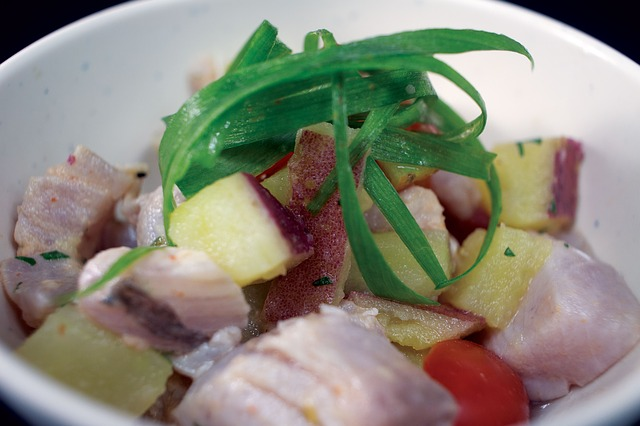

Preparación:
Poner a hervir en una olla las gambas limpias y trozos del mismo pescado. Una vez terminada la cocción dejar reposar para que enfríe. En un bol de cristal poner el pescado troceado en cubos muy pequeños. Exprimir todos los limones. Agregar sal y pimienta al gusto al pescado e ir echando este preparado al pescado poco a poco e ir removiendo. Dejar unos minutos para que termine de cocer el pescado con el limón. En una batidora licuar el preparado de las gambas con un trozo de apio, los dos rocotos, sal al gusto y un trozo de jenjibre. Después esta mezcla se pone junto con el preparado del pescado e ir removiendo. Para servir teniendo la yuca y la panocha hervida.
Video
Ceviche Peruano